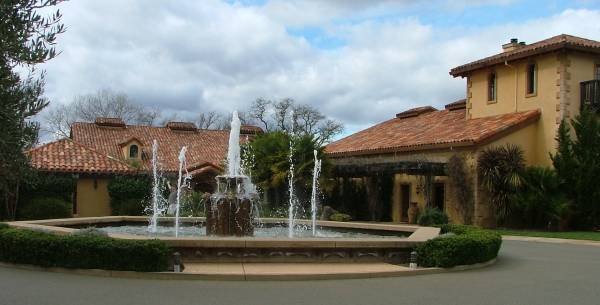

|
North America >
USA >
California >
Sonoma >
White Oak Vineyards & Winery

White Oak Vineyards & Winery
Healdsburg, CA
www.whiteoakwinery.com
Founded in 1981, White Oak produces and bottles wines from their vineyards in the Alexander, Napa
and Russian River Valleys.
No tasting fee.
Vintages:
Sauvignon Blanc Russian River Valley
2005
2007
Chardonnay Russian River Valley
2004
2008
Cabernet Sauvignon Napa Valley
2000
2002
2003
2005
Merlot Alexander Valley
2001
Merlot Napa Valley
2002
2005
Syrah Napa Valley
2000
2001
2002
2005
Zinfandel Alexander Valley
2007
Reserve Alexander Valley
2005
P Napa Valley
2006
|